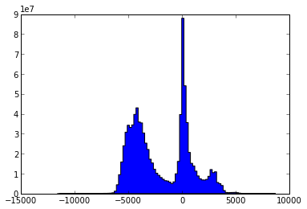
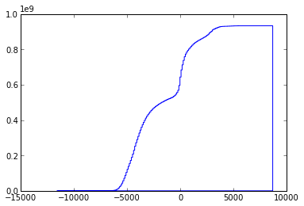
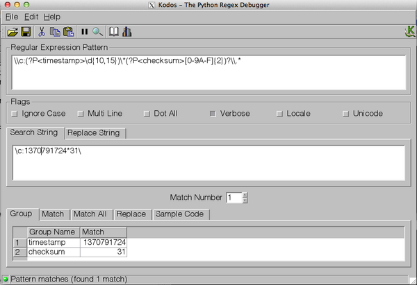

06.30.2013 21:51
A simple library autoconf example
I know there are a lot of other autoconf examples out there, but these
are mine. The process of creating the examples is me learning about
autoconf. I'm a long way from my first attempt at writing autoconf
for netcat in 1999 before netcat was rewritten.
I have started pushing my examples to github. I would like it if the code in my examples could be used in any project without attribution. I just don't want the collection as a whole to get taken without attribution.
https://github.com/schwehr/autoconf_samples
This example is a stripped down C++ library with a single function and builds a binary that uses that library. I'm a little surprised that it does a static link by default. I'm trying to increment simple_lib just a little beyond the endian example.
The Makefile.am gets much more complicated. I'm not 100% sure that I have this right. If anyone has a better way to specify and track the library version info, please let me know. I do know that you are supposed to refer to the locally built libraries with libFOO.la (not -lFOO) and let autoconf/automake do the right thing.
I have two helper scripts. First is an extention of the autogen.sh script. It makes sure there is an m4 directory and tells autoreconf to put what it can in that directory.
I have started pushing my examples to github. I would like it if the code in my examples could be used in any project without attribution. I just don't want the collection as a whole to get taken without attribution.
https://github.com/schwehr/autoconf_samples
This example is a stripped down C++ library with a single function and builds a binary that uses that library. I'm a little surprised that it does a static link by default. I'm trying to increment simple_lib just a little beyond the endian example.
ls -l total 56 -rw-r--r-- 1 schwehr 5000 0 Jun 30 15:42 AUTHORS -rw-r--r-- 1 schwehr 5000 0 Jun 30 15:42 ChangeLog -rw-r--r-- 1 schwehr 5000 271 Jun 30 15:54 Makefile.am -rw-r--r-- 1 schwehr 5000 0 Jun 30 15:42 NEWS -rw-r--r-- 1 schwehr 5000 0 Jun 30 15:42 README -rwxr-xr-x 1 schwehr 5000 99 Jun 30 15:41 autogen.sh -rwxr-xr-x 1 schwehr 5000 140 Jun 30 16:04 clean.sh -rw-r--r-- 1 schwehr 5000 401 Jun 30 18:35 configure.ac -rw-r--r-- 1 schwehr 5000 102 Jun 30 16:08 simple.cc -rw-r--r-- 1 schwehr 5000 14 Jun 30 15:46 simple.h -rw-r--r-- 1 schwehr 5000 60 Jun 30 15:52 simple_prog.ccFirst, the configure:
AC_PREREQ([2.65])
LT_PREREQ([2.4.2])
AC_CONFIG_MACRO_DIR(m4)
AC_INIT([simple],[1.0])
LT_INIT
AM_INIT_AUTOMAKE
AM_MAINTAINER_MODE
AC_PROG_CXX
AC_CONFIG_FILES([Makefile])
AC_CONFIG_HEADERS([config.h])
AC_OUTPUT
AS_ECHO
AS_ECHO([Results])
AS_ECHO
AS_ECHO(["$PACKAGE_STRING will be installed in: ${prefix}"])
AS_ECHO(["Use shared libs: $enable_shared"])
AS_ECHO(["Use static libs: $enable_static"])
A quick tour of the changes... First, I added libtool macros. The
LT_INIT sets up everything needed to build static and shared
libraries. I added AC_CONFIG_MACRO_DIR to try to hide more of the
autoconf/libtools stuff under a m4 directory. Then I added
AM_MAINTAINER_MODE, but that doesn't actually seem to add much. Then
I switch the AM C compiler macro with AC_PROG_CXX. Finally, I wanted
to demonstrate having a results summary section. The autoconf manuals
say that we should not use the shell echo command directly, so I used
AS_ECHO to print out the key results of the configure stage.
The Makefile.am gets much more complicated. I'm not 100% sure that I have this right. If anyone has a better way to specify and track the library version info, please let me know. I do know that you are supposed to refer to the locally built libraries with libFOO.la (not -lFOO) and let autoconf/automake do the right thing.
ACLOCAL_AMFLAGS = -I m4 include_HEADERS = simple.h lib_LTLIBRARIES = libsimple.la libsimple_la_LDFLAGS = -no-undefined -version-info 0:0:0 libsimple_la_SOURCES = simple.cc bin_PROGRAMS = simple_prog simple_prog_SOURCES = simple_prog.cc simple_prog_LDADD = simple.loI'm using a fully automatic config.h (I have no config.h.in), so I need to include the config.h in simple.cc:
#include "config.h"
#include <iostream>
void hello() {
std::cout << "Hello world from a lib\n";
}
Pretty boring library, but it does demonstrate the library.
I have two helper scripts. First is an extention of the autogen.sh script. It makes sure there is an m4 directory and tells autoreconf to put what it can in that directory.
#!/bin/bash if [ ! -d m4 ]; then echo mkdir mkdir m4 fi autoreconf --force --install -I m4The 2nd script is clean. It uses the maintainer-clean in the Makefile, but there is still a lot of autogenerated stuff, so I also rm the left overs.
#!/bin/bash make maintainer-clean rm -rf INSTALL Makefile.in aclocal.m4 compile config.* rm -rf configure depcomp install-sh ltmain.sh m4 missingTo build everything, here is what I do:
./autogen.sh mkdir libtoolize: putting auxiliary files in `.'. libtoolize: copying file `./ltmain.sh' libtoolize: putting macros in AC_CONFIG_MACRO_DIR, `m4'. libtoolize: copying file `m4/libtool.m4' libtoolize: copying file `m4/ltoptions.m4' libtoolize: copying file `m4/ltsugar.m4' libtoolize: copying file `m4/ltversion.m4' libtoolize: copying file `m4/lt~obsolete.m4' configure.ac:7: installing './config.guess' configure.ac:7: installing './config.sub' configure.ac:9: installing './install-sh' configure.ac:9: installing './missing' Makefile.am: installing './INSTALL' Makefile.am: installing './COPYING' using GNU General Public License v3 file Makefile.am: Consider adding the COPYING file to the version control system Makefile.am: for your code, to avoid questions about which license your project uses Makefile.am: installing './depcomp' ./configure --enable-maintainer-mode --enable-dependency-tracking checking build system type... x86_64-apple-darwin12.4.0 checking host system type... x86_64-apple-darwin12.4.0 checking how to print strings... printf checking for gcc... gcc checking whether the C compiler works... yes checking for C compiler default output file name... a.out checking for suffix of executables... checking whether we are cross compiling... no checking for suffix of object files... o checking whether we are using the GNU C compiler... yes checking whether gcc accepts -g... yes checking for gcc option to accept ISO C89... none needed checking for a sed that does not truncate output... /sw/bin/sed checking for grep that handles long lines and -e... /usr/bin/grep checking for egrep... /usr/bin/grep -E checking for fgrep... /usr/bin/grep -F checking for ld used by gcc... /usr/llvm-gcc-4.2/libexec/gcc/i686-apple-darwin11/4.2.1/ld checking if the linker (/usr/llvm-gcc-4.2/libexec/gcc/i686-apple-darwin11/4.2.1/ld) is GNU ld... no checking for BSD- or MS-compatible name lister (nm)... /usr/bin/nm checking the name lister (/usr/bin/nm) interface... BSD nm checking whether ln -s works... yes checking the maximum length of command line arguments... 196608 checking whether the shell understands some XSI constructs... yes checking whether the shell understands "+="... yes checking how to convert x86_64-apple-darwin12.4.0 file names to x86_64-apple-darwin12.4.0 format... func_convert_file_noop checking how to convert x86_64-apple-darwin12.4.0 file names to toolchain format... func_convert_file_noop checking for /usr/llvm-gcc-4.2/libexec/gcc/i686-apple-darwin11/4.2.1/ld option to reload object files... -r checking for objdump... no checking how to recognize dependent libraries... pass_all checking for dlltool... no checking how to associate runtime and link libraries... printf %s\n checking for ar... ar checking for archiver @FILE support... no checking for strip... strip checking for ranlib... ranlib checking for gawk... gawk checking command to parse /usr/bin/nm output from gcc object... ok checking for sysroot... no checking for mt... no [snip] checking how to run the C++ preprocessor... g++ -E checking for ld used by g++... /usr/llvm-gcc-4.2/libexec/gcc/i686-apple-darwin11/4.2.1/ld checking if the linker (/usr/llvm-gcc-4.2/libexec/gcc/i686-apple-darwin11/4.2.1/ld) is GNU ld... no checking whether the g++ linker (/usr/llvm-gcc-4.2/libexec/gcc/i686-apple-darwin11/4.2.1/ld) supports shared libraries... yes checking for g++ option to produce PIC... -fno-common -DPIC checking if g++ PIC flag -fno-common -DPIC works... yes checking if g++ static flag -static works... no checking if g++ supports -c -o file.o... yes checking if g++ supports -c -o file.o... (cached) yes checking whether the g++ linker (/usr/llvm-gcc-4.2/libexec/gcc/i686-apple-darwin11/4.2.1/ld) supports shared libraries... yes checking dynamic linker characteristics... darwin12.4.0 dyld checking how to hardcode library paths into programs... immediate checking dependency style of g++... gcc3 checking that generated files are newer than configure... done configure: creating ./config.status config.status: creating Makefile config.status: creating config.h config.status: executing libtool commands config.status: executing depfiles commands Results simple 1.0 will be installed in: /usr/local Use shared libs: yes make make all-am /bin/sh ./libtool --tag=CXX --mode=compile g++ -DHAVE_CONFIG_H -I. -g -O2 -MT simple.lo -MD -MP -MF .deps/simple.Tpo -c -o simple.lo simple.cc libtool: compile: g++ -DHAVE_CONFIG_H -I. -g -O2 -MT simple.lo -MD -MP -MF .deps/simple.Tpo -c simple.cc -fno-common -DPIC -o .libs/simple.o libtool: compile: g++ -DHAVE_CONFIG_H -I. -g -O2 -MT simple.lo -MD -MP -MF .deps/simple.Tpo -c simple.cc -o simple.o >/dev/null 2>&1 mv -f .deps/simple.Tpo .deps/simple.Plo /bin/sh ./libtool --tag=CXX --mode=link g++ -g -O2 -no-undefined -version-info 0:0:0 -o libsimple.la -rpath /usr/local/lib simple.lo libtool: link: g++ -dynamiclib -o .libs/libsimple.0.dylib .libs/simple.o -O2 -install_name /usr/local/lib/libsimple.0.dylib -compatibility_version 1 -current_version 1.0 -Wl,-single_module libtool: link: (cd ".libs" && rm -f "libsimple.dylib" && ln -s "libsimple.0.dylib" "libsimple.dylib") libtool: link: ar cru .libs/libsimple.a simple.o libtool: link: ranlib .libs/libsimple.a libtool: link: ( cd ".libs" && rm -f "libsimple.la" && ln -s "../libsimple.la" "libsimple.la" ) g++ -DHAVE_CONFIG_H -I. -g -O2 -MT simple_prog.o -MD -MP -MF .deps/simple_prog.Tpo -c -o simple_prog.o simple_prog.cc mv -f .deps/simple_prog.Tpo .deps/simple_prog.Po /bin/sh ./libtool --tag=CXX --mode=link g++ -g -O2 -o simple_prog simple_prog.o simple.lo libtool: link: g++ -g -O2 -o simple_prog simple_prog.o .libs/simple.o -Wl,-bind_at_loadNow the results:
otool -L simple_prog simple_prog: /usr/lib/libstdc++.6.dylib (compatibility version 7.0.0, current version 56.0.0) /usr/lib/libSystem.B.dylib (compatibility version 1.0.0, current version 169.3.0) ./simple_prog Hello world from a lib ls -l .libs/ total 144 -rwxr-xr-x 1 schwehr 5000 9508 Jun 30 19:20 libsimple.0.dylib -rw-r--r-- 1 schwehr 5000 23376 Jun 30 19:20 libsimple.a lrwxr-xr-x 1 schwehr 5000 17 Jun 30 19:20 libsimple.dylib -> libsimple.0.dylib lrwxr-xr-x 1 schwehr 5000 15 Jun 30 19:20 libsimple.la -> ../libsimple.la -rw-r--r-- 1 schwehr 5000 922 Jun 30 19:20 libsimple.lai -rw-r--r-- 1 schwehr 5000 23184 Jun 30 19:20 simple.o
06.30.2013 10:36
A simple autoconf example
In going through autoconf setup for mb-system, I have started feeling
much better about autoconf. I think that one of the main things
missing are a nice collection of simple examples. I wanted to see
what it looked like to setup an example of the bare minimum to test
byte order. Here is what I did.
First, create a file called configure.ac (formerly known as configure.in):
This basically says that we have an autoconf 2.65 based configuration for a project called "endian". We want to use automake to build C programs and that we need to know the endian-ness of the machine.
Next, I need an automake input file, Makefile.am, that says how to build our endian.c code.
First, add this line to the configure.ac right after AC_CONFIG_FILES:
First, create a file called configure.ac (formerly known as configure.in):
AC_PREREQ([2.65]) AC_INIT([endian],[1.0]) AM_INIT_AUTOMAKE dnl AM_MAINTAINER_MODE AM_PROG_CC_C_O AC_C_BIGENDIAN dnl AC_CONFIG_HEADERS([config.h]) AC_CONFIG_FILES([Makefile]) AC_OUTPUTNote that "dnl" is the start of comment designation (aka Do Not Load).
This basically says that we have an autoconf 2.65 based configuration for a project called "endian". We want to use automake to build C programs and that we need to know the endian-ness of the machine.
Next, I need an automake input file, Makefile.am, that says how to build our endian.c code.
bin_PROGRAMS = endian endian_SOURCES = endian.cAnd now for the source code:
#include <stdio.h>
int main(void) {
#ifdef WORDS_BIGENDIAN
printf("big\n");
return 1;
#else
printf("little\n");
return 0;
#endif
}
To set this up, create an autogen.sh script:
#!/bin/bash autoreconf --force --installWe are now ready to try building our project.
chmod +x autogen.sh ls -l total 32 -rw-r--r-- 1 schwehr 5000 48 Jun 29 23:04 Makefile.am -rwxr-xr-x 1 schwehr 5000 102 Jun 30 07:50 autogen.sh -rw-r--r-- 1 schwehr 5000 226 Jun 30 07:51 configure.ac -rw-r--r-- 1 schwehr 5000 140 Jun 29 23:23 endian.c ./autogen.sh configure.ac:8: installing './compile' configure.ac:6: installing './install-sh' configure.ac:6: installing './missing' Makefile.am: installing './INSTALL' Makefile.am: error: required file './NEWS' not found Makefile.am: error: required file './README' not found Makefile.am: error: required file './AUTHORS' not found Makefile.am: error: required file './ChangeLog' not found Makefile.am: installing './COPYING' using GNU General Public License v3 file Makefile.am: Consider adding the COPYING file to the version control system Makefile.am: for your code, to avoid questions about which license your project uses Makefile.am: installing './depcomp' autoreconf: automake failed with exit status: 1 touch AUTHORS ChangeLog NEWS README ./autogen.sh # No output ls -l total 696 -rw-r--r-- 1 schwehr 5000 0 Jun 30 07:54 AUTHORS -rw-r--r-- 1 schwehr 5000 35147 Jun 30 07:53 COPYING -rw-r--r-- 1 schwehr 5000 0 Jun 30 07:54 ChangeLog -rw-r--r-- 1 schwehr 5000 15749 Jun 30 07:55 INSTALL -rw-r--r-- 1 schwehr 5000 48 Jun 29 23:04 Makefile.am -rw-r--r-- 1 schwehr 5000 20989 Jun 30 07:55 Makefile.in -rw-r--r-- 1 schwehr 5000 0 Jun 30 07:54 NEWS -rw-r--r-- 1 schwehr 5000 0 Jun 30 07:54 README -rw-r--r-- 1 schwehr 5000 36026 Jun 30 07:55 aclocal.m4 -rwxr-xr-x 1 schwehr 5000 106 Jun 30 07:55 autogen.sh drwxr-xr-x 7 schwehr 5000 238 Jun 30 07:55 autom4te.cache -rwxr-xr-x 1 schwehr 5000 7333 Jun 30 07:55 compile -rwxr-xr-x 1 schwehr 5000 160168 Jun 30 07:55 configure -rw-r--r-- 1 schwehr 5000 226 Jun 30 07:51 configure.ac -rwxr-xr-x 1 schwehr 5000 23910 Jun 30 07:55 depcomp -rw-r--r-- 1 schwehr 5000 140 Jun 29 23:23 endian.c -rwxr-xr-x 1 schwehr 5000 13997 Jun 30 07:55 install-sh -rwxr-xr-x 1 schwehr 5000 10179 Jun 30 07:55 missingNow we have a world that will hopefully work. We need to try it out.
./configure --help
`configure' configures endian 1.0 to adapt to many kinds of systems.
Usage: ./configure [OPTION]... [VAR=VALUE]...
To assign environment variables (e.g., CC, CFLAGS...), specify them as
VAR=VALUE. See below for descriptions of some of the useful variables.
Defaults for the options are specified in brackets.
Configuration:
-h, --help display this help and exit
--help=short display options specific to this package
--help=recursive display the short help of all the included packages
-V, --version display version information and exit
...
CPP C preprocessor
Use these variables to override the choices made by `configure' or to help
it to find libraries and programs with nonstandard names/locations.
Report bugs to the package provider.
./configure --prefix=/tmp/endian
checking for a BSD-compatible install... /sw/bin/ginstall -c
checking whether build environment is sane... yes
checking for a thread-safe mkdir -p... /sw/bin/gmkdir -p
checking for gawk... gawk
checking whether make sets $(MAKE)... yes
checking for style of include used by make... GNU
checking for gcc... gcc
checking whether the C compiler works... yes
checking for C compiler default output file name... a.out
checking for suffix of executables...
checking whether we are cross compiling... no
checking for suffix of object files... o
checking whether we are using the GNU C compiler... yes
checking whether gcc accepts -g... yes
checking for gcc option to accept ISO C89... none needed
checking dependency style of gcc... gcc3
checking whether gcc and cc understand -c and -o together... yes
checking how to run the C preprocessor... gcc -E
checking for grep that handles long lines and -e... /usr/bin/grep
checking for egrep... /usr/bin/grep -E
checking for ANSI C header files... yes
checking for sys/types.h... yes
checking for sys/stat.h... yes
checking for stdlib.h... yes
checking for string.h... yes
checking for memory.h... yes
checking for strings.h... yes
checking for inttypes.h... yes
checking for stdint.h... yes
checking for unistd.h... yes
checking whether byte ordering is bigendian... no
checking that generated files are newer than configure... done
configure: creating ./config.status
config.status: creating Makefile
config.status: executing depfiles commands
ls -l config.{status,log} Makefile
-rw-r--r-- 1 schwehr 5000 21248 Jun 30 07:59 Makefile
-rw-r--r-- 1 schwehr 5000 14512 Jun 30 07:59 config.log
-rwxr-xr-x 1 schwehr 5000 29185 Jun 30 07:59 config.status
make
gcc -DPACKAGE_NAME=\"endian\" -DPACKAGE_TARNAME=\"endian\" \
-DPACKAGE_VERSION=\"1.0\" -DPACKAGE_STRING=\"endian\ 1.0\" \
-DPACKAGE_BUGREPORT=\"\" -DPACKAGE_URL=\"\" -DPACKAGE=\"endian\" \
-DVERSION=\"1.0\" -DSTDC_HEADERS=1 -DHAVE_SYS_TYPES_H=1 \
-DHAVE_SYS_STAT_H=1 -DHAVE_STDLIB_H=1 -DHAVE_STRING_H=1 \
-DHAVE_MEMORY_H=1 -DHAVE_STRINGS_H=1 -DHAVE_INTTYPES_H=1 \
-DHAVE_STDINT_H=1 -DHAVE_UNISTD_H=1 -I. \
-g -O2 -MT endian.o -MD -MP -MF .deps/endian.Tpo -c -o endian.o endian.c
mv -f .deps/endian.Tpo .deps/endian.Po
gcc -g -O2 -o endian endian.o
ls -l endian.o endian
-rwxr-xr-x 1 schwehr 5000 9048 Jun 30 08:00 endian
-rw-r--r-- 1 schwehr 5000 2328 Jun 30 08:00 endian.o
make install
/sw/bin/gmkdir -p '/tmp/endian/bin'
/sw/bin/ginstall -c endian '/tmp/endian/bin'
make[1]: Nothing to be done for `install-data-am'.
ls -la /tmp/endian/bin/
total 24
drwxr-xr-x 3 schwehr wheel 102 Jun 30 08:01 .
drwxr-xr-x 3 schwehr wheel 102 Jun 30 08:01 ..
-rwxr-xr-x 1 schwehr wheel 9048 Jun 30 08:01 endian
/tmp/endian/bin/endian
little
That's great and it works, but the build line is pretty long. We can
use a config.h C include file to track all the defines rather than -D
flags in the gcc compile line.
First, add this line to the configure.ac right after AC_CONFIG_FILES:
AC_CONFIG_HEADERS([config.h])At the top of endian.c, add this include:
#include "config.h"Then build again:
./autogen.sh ./configure make make all-am gcc -DHAVE_CONFIG_H -I. -g -O2 -MT endian.o -MD -MP -MF .deps/endian.Tpo -c -o endian.o endian.c mv -f .deps/endian.Tpo .deps/endian.Po gcc -g -O2 -o endian endian.oThe new config.h file contains this c-pre-processor (cpp) setup:
/* Define WORDS_BIGENDIAN to 1 if your processor stores words with the most significant byte first (like Motorola and SPARC, unlike Intel). */ #if defined AC_APPLE_UNIVERSAL_BUILD # if defined __BIG_ENDIAN__ # define WORDS_BIGENDIAN 1 # endif #else # ifndef WORDS_BIGENDIAN /* # undef WORDS_BIGENDIAN */ # endif #endifThe final step is removing all the configured files so that only the key sources are left.
make maintainer-clean test -z "endian" || rm -f endian rm -f *.o rm -f *.tab.c test -z "" || rm -f test . = "." || test -z "" || rm -f rm -f config.h stamp-h1 rm -f TAGS ID GTAGS GRTAGS GSYMS GPATH tags rm -f cscope.out cscope.in.out cscope.po.out cscope.files This command is intended for maintainers to use it deletes files that may require special tools to rebuild. rm -f config.status config.cache config.log configure.lineno config.status.lineno rm -rf ./autom4te.cache rm -rf ./.deps rm -f Makefile ls -l total 744 -rw-r--r-- 1 schwehr 5000 0 Jun 30 07:54 AUTHORS -rw-r--r-- 1 schwehr 5000 35147 Jun 30 07:53 COPYING -rw-r--r-- 1 schwehr 5000 0 Jun 30 07:54 ChangeLog -rw-r--r-- 1 schwehr 5000 15749 Jun 30 08:18 INSTALL -rw-r--r-- 1 schwehr 5000 48 Jun 29 23:04 Makefile.am -rw-r--r-- 1 schwehr 5000 21594 Jun 30 08:18 Makefile.in -rw-r--r-- 1 schwehr 5000 0 Jun 30 07:54 NEWS -rw-r--r-- 1 schwehr 5000 0 Jun 30 07:54 README -rw-r--r-- 1 schwehr 5000 36026 Jun 30 08:17 aclocal.m4 -rwxr-xr-x 1 schwehr 5000 106 Jun 30 07:55 autogen.sh -rwxr-xr-x 1 schwehr 5000 7333 Jun 30 08:18 compile -rw-r--r-- 1 schwehr 5000 1947 Jun 30 08:18 config.h.in -rw-r--r-- 1 schwehr 5000 1947 Jun 30 08:08 config.h.in~ -rwxr-xr-x 1 schwehr 5000 164563 Jun 30 08:18 configure -rw-r--r-- 1 schwehr 5000 224 Jun 30 08:17 configure.ac -rwxr-xr-x 1 schwehr 5000 23910 Jun 30 08:18 depcomp -rw-r--r-- 1 schwehr 5000 161 Jun 30 08:17 endian.c -rwxr-xr-x 1 schwehr 5000 13997 Jun 30 08:18 install-sh -rwxr-xr-x 1 schwehr 5000 10179 Jun 30 08:18 missing rm COPYING INSTALL Makefile.in aclocal.m4 compile config.h.in* configure depcomp install-sh missing ls -l total 32 -rw-r--r-- 1 schwehr 5000 0 Jun 30 07:54 AUTHORS -rw-r--r-- 1 schwehr 5000 0 Jun 30 07:54 ChangeLog -rw-r--r-- 1 schwehr 5000 48 Jun 29 23:04 Makefile.am -rw-r--r-- 1 schwehr 5000 0 Jun 30 07:54 NEWS -rw-r--r-- 1 schwehr 5000 0 Jun 30 07:54 README -rwxr-xr-x 1 schwehr 5000 106 Jun 30 07:55 autogen.sh -rw-r--r-- 1 schwehr 5000 224 Jun 30 08:17 configure.ac -rw-r--r-- 1 schwehr 5000 161 Jun 30 08:17 endian.c
06.26.2013 12:57
Google TimeLapse for coastal and marine applications
Thanks to Art for pointing out Wachapreague,VA, which has the fastest coastal erosion rate in the US.
The area of Pilottown, LA and the mouth of the Mississippi River is also another area with huge loss of area due to coastal erosion.
Dubai construction (also look to the north west):
The area of Pilottown, LA and the mouth of the Mississippi River is also another area with huge loss of area due to coastal erosion.
Dubai construction (also look to the north west):
06.23.2013 08:55
NMEA TAG blocks part 2
In my previous post of NMEA TAG block encoded data, I discussed my
parsing of the USCG old style NMEA metadata, how to calculate NMEA
checksums, and parsing the timestamp.
Here are the complete list of codes for the TAG components:
Before, we had:
SentenceNum-TotalSentences-IntegerIdentifyingTheGroup
| Letter code | NMEA Config Msg | Description | type |
| c | CPC | UNIX time in seconds or millisec | int |
| d | CPD | Destination | string |
| g | CPG | Grouping param | ? |
| n | CPN | line-count | int |
| r | CPR | relative time (Units?) | int |
| s | CPS | Source / station | string |
| t | CPT | Text string | string |
\\c:(?P<timestamp>\d{10,15})\*(?P<checksum>[0-9A-F]{2})?\\.*
Now, we would like to add the rest. We start by adding a 2nd by
creating a string with a destination ("d") entry. The spec says this
is an alphanumeric string up to 15 charactions. What exactly can be,
I'm not totally sure. I presume that it can't have either a star
('*'), comma (','), and backslash ('\'), but am unsure about
characters in the ASCII printable set.
body_parts = ['c:%d' % time.time(), 'd:%s' % 'MyStation12345']
body = ','.join(body_parts); body
# 'c:1372002373,d:MyStation12345'
'\{body}*{checksum}\\'.format(body=body, checksum=checksum(body))
# \c:1372002373,d:MyStation12345*15\
We can get the destination with theis regex string: 'd:[^*,\\]{1,15}'.
It needs to be named and if we turn on "Verbose," kodos allows us
to have the regular expression span multiple lines.
\\
c:(?P<timestamp>\d{10,15}),
d:(?P<dest>[^*,\\]{1,15})
\*(?P<checksum>[0-9A-F]{2})?\\.*
What if the order were reversed? And what if either of the two
entries was missing? Please note in this next code block that I have
setup the regex to take either a common or star between any parameter.
This will let through '*' between parameters, which is not correct. I
am sure there is a way to make the regex such that commas between
elements and the start is outside of the repeated block, but I haven't figured
it out yet.
\\
(
(
c:(?P<timestamp>\d{10,15}) |
d:(?P<dest>[^*,\\]{1,15})
)[,*]
)
(?P<checksum>[0-9A-F]{2})?\\.*
Now we need to flush out for the rest of the options. Grouping has substructure to it:
SentenceNum-TotalSentences-IntegerIdentifyingTheGroup
g:(?P<group>(?P<sent_num>\d)-(?P<sent_tot>\d)-(?P<group_id>\d+))Then n for line number and r for relative time are just an integer for each.
\\
(
(
c:(?P<time>\d{10,15}) |
d:(?P<dest>[^*,\\]{1,15}) |
g:(?P<group>(?P<sent_num>\d)-(?P<sent_tot>\d)-(?P<group_id>\d+)) |
n:(?P<line_num>\d+) |
r:(?P<rel_time>\d+) |
s:(?P<src>[^$*,!\\]{1,15}) |
t:(?P<text>[^$*,!\\]+)
)[,*]
)+
(?P<checksum>[0-9A-F]{2})?\\(?P<nmea_msg>.*)
At this point, we can parse any tag block in the front.
06.16.2013 12:57
autoconf/automake changes to mb-system for conditionally removing GSF
This is my first really deep dive into autoconf / automake. I have
been a heavy user of configure scripts and could sort of hack my way
through minor changes, but I feel like I can actually do some useful
work on autoconf and automake scripts now. I just posted a very large
patch on the mb-system mailing list that lets people use --without-gsf
to build mb-system without the Generic Sensor Format library by SAIC,
code which has no license. Here is a version of that email.
https://gist.github.com/schwehr/5792674
This is a first step towards removing GSF to allow MB-system to be packaged by Hamish for submission to RedHat linux and Debian linux. I think this should make copyright sanitization job of the packaging just require deleting the gsf subdir, making a new tar, and then including --without-gsf in the build process.
I've got a patch that I believe successfully builds with or without gsf. Would really appreciate very detailed review of this patch. It builds for me on Mac OSX 10.8 and the present of libgsf in the shared libraries list looks okay, but I haven't tried running any files through yet. Watch through of the patch below. I'm super detailed below to hopefully help in the review and because this is the first time I've done something like this with autoconf/automake and I'm double checking what I did.
The patch is kind of large because it contains deleting mb_config.h which shows as a "-" changes for the entire file.
Notes from Hamish about GSF issues of being unlicensed and submission to deb & rhel/fedora
Kurt, the optional-system's proj4 and GFS switches will certainly not get past the debian ftp masters, actually the deb packaging will need to rip out any license problematic stuff and make a new tarball, since all original code packages are hosted on the debian servers, and they as a legal entity need to be able to guarantee that they've got full copyright clearance for anything they redistribute.
TODO - header.h.in conversion
I did not convert any of the C headers that have to change to their respective .in template version. e.g.
mb_format.h -> mb_format.h.in
That means that building against installed headers & libs is not going to work right. e.g.
WITHOUT gsf means that prototype for mbr_register_gsfgenmb should not be in mb_format.h at all (or it should at least be commented out)
TODO - should we delete, rename or leave alone structure members for gsf?
In order to catch the use of gsfid, I renamed this struct member to _gsfid_placeholder when GSF not defined:
This file should not be checked into svn. It doesn't cause trouble if you build on top of the source tree, but if you do VPATH style building, it gets included before the new mb_config.h that gets written into the build tree.
How I was building
The options now look like this:
The final line of configure.in shows how autoconf wants us to print summaries:
In src/Makefile.am, I conditionally insert the gsf directory into SUBDIRS. I normally use "SUBDIRS +=", but I wanted to follow the convention already used in the file.
I put gsf only source files in with the "+=" syntax of Makefile.am. e.g. in mb-system/src/mbio/Makefile.am:
For example in mb_close:
The normal style of include guards is that the actual head should do the include guard, not the file that does the #include.
This is where I could really use others taking a close look. e.g.
https://gist.github.com/schwehr/5792674
This is a first step towards removing GSF to allow MB-system to be packaged by Hamish for submission to RedHat linux and Debian linux. I think this should make copyright sanitization job of the packaging just require deleting the gsf subdir, making a new tar, and then including --without-gsf in the build process.
I've got a patch that I believe successfully builds with or without gsf. Would really appreciate very detailed review of this patch. It builds for me on Mac OSX 10.8 and the present of libgsf in the shared libraries list looks okay, but I haven't tried running any files through yet. Watch through of the patch below. I'm super detailed below to hopefully help in the review and because this is the first time I've done something like this with autoconf/automake and I'm double checking what I did.
The patch is kind of large because it contains deleting mb_config.h which shows as a "-" changes for the entire file.
Notes from Hamish about GSF issues of being unlicensed and submission to deb & rhel/fedora
Kurt, the optional-system's proj4 and GFS switches will certainly not get past the debian ftp masters, actually the deb packaging will need to rip out any license problematic stuff and make a new tarball, since all original code packages are hosted on the debian servers, and they as a legal entity need to be able to guarantee that they've got full copyright clearance for anything they redistribute.
TODO - header.h.in conversion
I did not convert any of the C headers that have to change to their respective .in template version. e.g.
mb_format.h -> mb_format.h.in
That means that building against installed headers & libs is not going to work right. e.g.
WITHOUT gsf means that prototype for mbr_register_gsfgenmb should not be in mb_format.h at all (or it should at least be commented out)
TODO - should we delete, rename or leave alone structure members for gsf?
In order to catch the use of gsfid, I renamed this struct member to _gsfid_placeholder when GSF not defined:
#ifdef WITH_GSF
int gsfid; /* GSF datastream ID */
#else
int _gsfid_placeholder;
#endif
Would it be better to leave it alone or could we just drop it like this, which would change the size of the structure (possibly causing problems with things like what ???):
#ifdef WITH_GSF
int gsfid; /* GSF datastream ID */
#endif
mb_config.h
This file should not be checked into svn. It doesn't cause trouble if you build on top of the source tree, but if you do VPATH style building, it gets included before the new mb_config.h that gets written into the build tree.
How I was building
svn co svn://svn.ilab.ldeo.columbia.edu/repo/mb-system/trunk mb-system
cp -rp mb-system{,.orig}
mkdir build
cd build
WITHOUT gsf
(cd ../mb-system; ./autogen.sh); rm -rf src Makefile config.{status,log}; \
../mb-system/configure --with-netcdf-include=/sw/include --with-gmt-lib=/sw/lib \
--with-gmt-include=/sw/include --disable-static --without-gsf && make -j 2
(cd ../mb-system; ./autogen.sh); rm -rf src Makefile config.{status,log}; \
../mb-system/configure --with-netcdf-include=/sw/include --with-gmt-lib=/sw/lib \
--with-gmt-include=/sw/include --disable-static --with-gsf=no && make -j 2
WITH gsf (no option, means include/build with gsf)
(cd ../mb-system; ./autogen.sh); rm -rf src Makefile config.{status,log}; \
../mb-system/configure --with-netcdf-include=/sw/include --with-gmt-lib=/sw/lib \
--with-gmt-include=/sw/include --disable-static && make -j 2
(cd ../mb-system; ./autogen.sh); rm -rf src Makefile config.{status,log}; \
../mb-system/configure --with-netcdf-include=/sw/include --with-gmt-lib=/sw/lib \
--with-gmt-include=/sw/include --disable-static --with-gsf && make -j 2
(cd ../mb-system; ./autogen.sh); rm -rf src Makefile config.{status,log}; \
../mb-system/configure --with-netcdf-include=/sw/include --with-gmt-lib=/sw/lib \
--with-gmt-include=/sw/include --disable-static --with-gsf=yes && make -j 2
Check for libgsf shared library being linked in as a double check
# WITHOUT gsf otool -L src/utilities/.libs/mbinfo | grep gsf # WITH otool -L src/utilities/.libs/mbinfo | grep gsf # /usr/local/lib/libmbgsf.0.dylib (compatibility version 1.0.0, current version 1.0.0)Building the patch
cd ../mb-system # revert files with don't need to patch find . -name Makefile.in | xargs rm rm -rf configure autom4te.cache aclocal.m4 svn up # this file needs to leave svn! rm src/mbio/mb_config.h cd .. diff -ruN --exclude=.svn mb-system.orig mb-system > mb-with-gsf.patchChanges to how configure.in and the resulting configure
The options now look like this:
--with-otps_dir=DIR Location of OSU Tidal Prediction Software --without-gsf Disable unlicensed SAIC Generic Sensor Format (GSF) --with-netcdf-lib=DIR Location of NetCDF libraryThe configure.in changes:
AC_MSG_CHECKING([whether to build with Generic Sensor Format (GSF)]) AC_ARG_WITH([gsf], AS_HELP_STRING([--without-gsf], [Disable unlicensed SAIC Generic Sensor Format (GSF)]), [ ], [with_gsf=yes]) AC_MSG_RESULT([$with_gsf]) AS_IF([test x"$with_gsf" = xyes], [AC_DEFINE(WITH_GSF, 1, [Build with GSF])]) AM_CONDITIONAL([BUILD_GSF], [test x"$with_gsf" = xyes])The above is different than all the other options. I tried to use the provided autoconf and automake macros as much as possible. The above does 3 things:
- convert the "#undef WITH_GSF" in mb_config.h.in to "#define WITH_GSF 1" or nothing.
- Set the value of BUILD_GSF so that the Makefile.am files are properly converted to Makefiles with control of the "if BUILD_GSF" tweaks
- The combination of using all the AS_ macros means that --quiet can work as intended.
- Anything other than no option, --with-gsf, or --with-gsf=yes is treated as a leave out GSF
The final line of configure.in shows how autoconf wants us to print summaries:
AS_ECHO(["Build with Generic Sensor Format (GSF) Support: $with_gsf"])is a lot simpler than:
if test x"$with_gsf" = xyes ; then echo "Generic Sensor Format (GSF) Support: Enabled" else echo "Generic Sensor Format (GSF) Support: Disabled" fiDo not build the gsf subdirectory
In src/Makefile.am, I conditionally insert the gsf directory into SUBDIRS. I normally use "SUBDIRS +=", but I wanted to follow the convention already used in the file.
if BUILD_GSF XBUILD_SUB_GSF = gsf endif SUBDIRS = $(XBUILD_SUB_GSF) surf mr1pr proj mbio mbaux utilities gmt otps macros $(XBUILD_SUB) $(XBUILD_SUB_GL) man html ps shareconditionally add gsf files
I put gsf only source files in with the "+=" syntax of Makefile.am. e.g. in mb-system/src/mbio/Makefile.am:
include_HEADERS = mb_config.h \
mb_format.h mb_status.h \
mb_io.h mb_swap.h \
mbf_mbarirov.h mbf_mbarrov2.h \
mbf_mbpronav.h mbf_xtfr8101.h
if BUILD_GSF
include_HEADERS += mbsys_gsf.h mbf_gsfgenmb.h
endif
use mb_config.h to conditionally compile code
For example in mb_close:
#include "gsf.h"Becomes:
#ifdef WITH_GSF # include "gsf.h" #endifThe include guard situation in mb_system is a little inconsistent
The normal style of include guards is that the actual head should do the include guard, not the file that does the #include.
-#ifndef MB_DEFINE_DEF +#include "mb_config.h" #include "mb_define.h" -#endif - -#ifndef MB_STATUS_DEF #include "mb_status.h" -#endifAs discussed above, I did this in mb_io.h to help make sure I didn't miss anything
+#ifdef WITH_GSF int gsfid; /* GSF datastream ID */ +#else + int _gsfid_placeholder; +#endifI then #ifdefined WITH_GSF around any gsf related code
This is where I could really use others taking a close look. e.g.
+#ifdef WITH_GSF mb_io_ptr->gsfid = 0; +#else + /* TODO: possibly set to -666 */ +#endifand
@@ -3072,6 +3086,7 @@ return(status); } /*--------------------------------------------------------------------*/ +#ifdef WITH_GSF int mbcopy_reson8k_to_gsf(int verbose, void *imbio_ptr, void *ombio_ptr, @@ -3479,4 +3494,5 @@ /* return status */ return(status); } +#endif /*--------------------------------------------------------------------*/
06.13.2013 11:14
How much of the world is deeper than X
I was asked for fraction of the ocean deeper than 20 fathoms. That
gets tricky. What would the differnce be if this were at MLLW vrs
MHW? I welcome input from anyone specializing in geodesy, vertical
datums and tides.
I prefer to work in units of chains. So how much is deeper than 1.8 chains (aka -36.576m)... 97.1% of the WORLD (oceans + other things that might be deeper but not in the ocean). And this is relative to whatever vertical datum topo30 uses.
Here is using the topo30 2012 edition from David Sandwell and JJ Becker. First a warning. There is a non-commercial license on the topo30 data. This is more restrictive than the GPL license that many are familiar with.
https://gist.github.com/schwehr/5789528 - http://nbviewer.ipython.org/5789528
I prefer to work in units of chains. So how much is deeper than 1.8 chains (aka -36.576m)... 97.1% of the WORLD (oceans + other things that might be deeper but not in the ocean). And this is relative to whatever vertical datum topo30 uses.
Here is using the topo30 2012 edition from David Sandwell and JJ Becker. First a warning. There is a non-commercial license on the topo30 data. This is more restrictive than the GPL license that many are familiar with.
Permission to copy, modify and distribute any part of this gridded bathymetry at 30 second resolution for educational, research and non-profit purposes, without fee, and without a written agreement is hereby granted ... ... use for commercial purposes should contact the Technology Transfer & Intellectual Property Services, University of California, San Diego ...
wget ftp://topex.ucsd.edu/pub/srtm30_plus/topo30/topo30.grd
gdal_translate topo30.grd topo30.tif
grdinfo topo30.grd
topo30.grd: Title: topo30.grd
topo30.grd: Command: xyz2grd -V -Rg -I30c topo30 -Gtopo30.grd=ns -ZTLhw -F
topo30.grd: Remark:
topo30.grd: Pixel node registration used
topo30.grd: Grid file format: ns (# 16) GMT netCDF format (short) (COARDS-compliant)
topo30.grd: x_min: 0 x_max: 360 x_inc: 0.00833333333333 name: longitude [degrees_east] nx: 43200
topo30.grd: y_min: -90 y_max: 90 y_inc: 0.00833333333333 name: latitude [degrees_north] ny: 21600
topo30.grd: z_min: -11609 z_max: 8685 name: z
topo30.grd: scale_factor: 1 add_offset: 0
# z above is altitude in meters relative to ?
# install ipython, gdal-py and numpy
ipython
import gdal
src = gdal.Open('topo30.tif')
topo30 = src.GetRasterBand(1).ReadAsArray()
num_deep = (topo30 < -36.576).sum()
'%.1f %% of the globe' % (num_deep / float(topo30.size) * 100)
67.7 % of the globe
num_ocean = (topo30 < 0).sum()
'%.1f %% of the ocean is deeper than 36.576m' % ( 100. * num_deep / float(num_ocean) )
'97.1 % of the ocean is deeper than 36.576m'Minus issues with resolution, vertical datums, tides and other stuff, 97.1% of the world is deeper than 20 fathoms and 91.4% is deeper than 100 fathoms.
https://gist.github.com/schwehr/5789528 - http://nbviewer.ipython.org/5789528


06.11.2013 21:21
smart phones and similar devices in the field
It's great to see that work continues at CCOM on this topic:
Back in 1990, I got to tour Scott Fisher's virtual reality lab at NASA Ames. After working on the Telepresence-ROV (TROV) vehicle in 1992, I was hooked on the idea of what might come when head mounted displays weren't so heavy that they quickly made your neck hurt and didn't require a 5kW generator.
Hiking around the Southern Snake Range doing geologic mapping, I dreamed of devices that would sync up the mapping via hill top repeaters (yeah, I had a HAM license). Why waiting until the evening to all copy our data to the master mylar sheet? And if we could capture field photos throughout the day, we could share best photos of geologic units and particular features as we discovered them. Instead, I had to wait to get back to civilization to develop physical film.
The next couple years, I had visions of laser range finders, stereo cameras and mapping tablets as I worked in Yellowstone mapping hot springs and in Mono Lake trying to get the TROV to do useful science. Perhaps more scientists would take notes in the field if they were wearing Google Glass and could just speak their observations.
I did quite a bit at SIO in the 2002-2005 range with a 21 foot by 8 foot curved display and then when I got to CCOM in 2005, I proposed hand held and head mounted augemented reality and heads up displays. I got CCOM to pony up for the first smart phone bought on the NOAA grant (an iPhone 3S for me).
Roland and Tom have been doing some really neat development at CCOM and it should be fun to see what comes.
Some images from the first half of the 1990's that triggered some of my thinking on wearable / portable devices and how they might help people work in the real world. If only GPS SA had been off back then!
Sorry about the quality of the images.
For people who think they can never have enough monitors! This is the new panoramic display in the VisLab. The monitors are hinged so they can be arranged as a flat wall or curved inward for a more immersive experience. Among other things, the display will be used with a ship simulator to study the potential benefits of hand-held spatially aware navigation aids like smart phones. Thanks to Will Fessenden for the nice photo!
Back in 1990, I got to tour Scott Fisher's virtual reality lab at NASA Ames. After working on the Telepresence-ROV (TROV) vehicle in 1992, I was hooked on the idea of what might come when head mounted displays weren't so heavy that they quickly made your neck hurt and didn't require a 5kW generator.
Hiking around the Southern Snake Range doing geologic mapping, I dreamed of devices that would sync up the mapping via hill top repeaters (yeah, I had a HAM license). Why waiting until the evening to all copy our data to the master mylar sheet? And if we could capture field photos throughout the day, we could share best photos of geologic units and particular features as we discovered them. Instead, I had to wait to get back to civilization to develop physical film.
The next couple years, I had visions of laser range finders, stereo cameras and mapping tablets as I worked in Yellowstone mapping hot springs and in Mono Lake trying to get the TROV to do useful science. Perhaps more scientists would take notes in the field if they were wearing Google Glass and could just speak their observations.
I did quite a bit at SIO in the 2002-2005 range with a 21 foot by 8 foot curved display and then when I got to CCOM in 2005, I proposed hand held and head mounted augemented reality and heads up displays. I got CCOM to pony up for the first smart phone bought on the NOAA grant (an iPhone 3S for me).
Roland and Tom have been doing some really neat development at CCOM and it should be fun to see what comes.
Some images from the first half of the 1990's that triggered some of my thinking on wearable / portable devices and how they might help people work in the real world. If only GPS SA had been off back then!
Sorry about the quality of the images.
06.10.2013 12:43
Google Ocean bathymetry update - World Oceans Day
Saturday (2 days ago) was World Oceans Day.
We made a small G+ post for it:
Google Earth: Revealing the Ocean on World Oceans Day!
Google Maps: On World Oceans Day, it's the perfect time to dive in and explore!
The text from the post and the image captions:
http://commondatastorage.googleapis.com/bathymetry/kml/NOAA-NGDC-OceanMapFootprints.kmz
Many thanks for the over 1000 +1's for the two G+ posts!
Google Earth: Revealing the Ocean on World Oceans Day!
Google Maps: On World Oceans Day, it's the perfect time to dive in and explore!
The text from the post and the image captions:
Here's a sneak preview of our work to improve our ocean map in Google Earth and Maps in partnership with NOAA's National Geophysical Data Center (http://goo.gl/zZpPB) and the University of Colorado CIRES program (http://goo.gl/b3dGH). Explore more today by downloading this Google Earth tour list http://goo.gl/jyDanHere Visit a detailed ocean landscape in Boundary Bay, WA. NOAA's Crescent Moegling says, "Within the Strait of Georgia, deep draft vessels transit to several large refinery facilities. It's our job to provide the mariner with the most accurate chart, with the most relevant features and depths available for their safe navigation." Notice the new high resolution 16 meter NOAA survey update (right) relative to the lower 1 km resolution across the Canadian border (left) in this area west of Bellingham, Washington.The kmz showing the locations of the updates is here:
http://commondatastorage.googleapis.com/bathymetry/kml/NOAA-NGDC-OceanMapFootprints.kmz
Many thanks for the over 1000 +1's for the two G+ posts!
06.07.2013 21:31
NMEA Transport, Annotate and Group (TAG) block encoding
Before I start, there are so many strange things in the NMEA specification,
but this is one of my favorites:
I finally started looking at the NMEA TAG block specification. I paid for version 4.0 of the spec, so I should use it, right? I have to say it is slightly painful. I'll do my best to describe what TAG block is, the issues that it is trying to address, and how well the authors did in their design. I really hate how standards often do not list the authors / contributors. No way to start up a discussion.
The motivation for a format change.
The basic NMEA 0183 (3.0 and lower) sentence is missing some things. First, it is limited to 79 characters per line. Therefore, there are many times that one line is too short for all that you would like to send. AIS introduced the concept of messages that span multiple lines with fields to help re-assemble the total message. This falls apart if you have a single feed coming from multiple devices that may all be doing the same thing giving intermixed multi-line messages. If we can identify the source of the message, then we can re-assemble these multi-line messages without fear of mixing unrelated parts.
The next issue is the lack of metadata in the NMEA0183 message format. Unless the message has a timestamp built in, there is no standard way to log the time. We may have additional metadata requirements and there is no place to put them.
History
The USCG created an initial metadata format somewhere in the pre-2005 time frame that appended fields after the existing message. I've documented that format elsewhere, but to summarize, it consists of comma separated fields that start with a letter code except the last field, which is the unix UTC timestamp. It works and that is what I've used since 2006 for my logging and processing in software line ais-py, noaadata-py and libais.
I created a python regular expression that parses the basic structure of these "old USCG format" messages. Here is an example message and the regular expression being used to pull apart the fields.
TAG block
Apparently, that style was not good enough. So some group of people tried to create something better. I'm going to ignore the control aspect. I typically only deal with logs from devices that are out of my influence. We get what we get.
The basic structure of TAG is to put additional data in the front of the original NMEA 0183 messages between two "\" characters. This is extra interesting in that most programming languages use the back-slash to start escape codes (e.g. "\n" and "\r"; c.f. "man ascii" and "man printf").
An example to show what this looks like. I got this chunk back in 2009.
So we have a start! More in a future post.
Since there is no provision for guaranteed delivery of messages and only limited error checking capability, this standard should be used with caution in all safety applications.Wahoo! And off we go with safety of life applications without additional thought.
I finally started looking at the NMEA TAG block specification. I paid for version 4.0 of the spec, so I should use it, right? I have to say it is slightly painful. I'll do my best to describe what TAG block is, the issues that it is trying to address, and how well the authors did in their design. I really hate how standards often do not list the authors / contributors. No way to start up a discussion.
The motivation for a format change.
The basic NMEA 0183 (3.0 and lower) sentence is missing some things. First, it is limited to 79 characters per line. Therefore, there are many times that one line is too short for all that you would like to send. AIS introduced the concept of messages that span multiple lines with fields to help re-assemble the total message. This falls apart if you have a single feed coming from multiple devices that may all be doing the same thing giving intermixed multi-line messages. If we can identify the source of the message, then we can re-assemble these multi-line messages without fear of mixing unrelated parts.
The next issue is the lack of metadata in the NMEA0183 message format. Unless the message has a timestamp built in, there is no standard way to log the time. We may have additional metadata requirements and there is no place to put them.
History
The USCG created an initial metadata format somewhere in the pre-2005 time frame that appended fields after the existing message. I've documented that format elsewhere, but to summarize, it consists of comma separated fields that start with a letter code except the last field, which is the unix UTC timestamp. It works and that is what I've used since 2006 for my logging and processing in software line ais-py, noaadata-py and libais.
I created a python regular expression that parses the basic structure of these "old USCG format" messages. Here is an example message and the regular expression being used to pull apart the fields.
#!/usr/bin/env python
import re
nmea_re = re.compile (r'''^!(?P<talker>AI)(?P<string_type>VD[MO])
,(?P<total>\d?)
,(?P<sen_num>\d?)
,(?P<seq_id>[0-9]?)
,(?P<chan>[AB])
,(?P<body>[;:=@a-zA-Z0-9<>\?\'\`]*)
,(?P<fill_bits>\d)\*(?P<checksum>[0-9A-F][0-9A-F])
(
(,S(?P<slot>\d*))
| (,s(?P<s_rssi>\d*))
| (,d(?P<signal_strength>[-0-9]*))
| (,t(?P<t_recver_hhmmss>(?P<t_hour>\d\d)(?P<t_min>\d\d)(?P<t_sec>\d\d.\d*)))
| (,T(?P<time_of_arrival>[^,]*))
| (,x(?P<x_station_counter>[0-9]*))
| (,(?P<station>(?P<station_type>[rbB])[a-zA-Z0-9_]*))
)*
,(?P<time_stamp>\d+([.]\d+)?)?''', re.VERBOSE)
match = nmea_re.match('!AIVDM,1,1,,A,14eG>3@01kqiIs8ICROownFn0D03,0*02,d-106,S0993,t140726.00,T26.49646933,r09STWO1,1370786847')
msg = match.groupdict()
for key, val in msg.iteritems():
print '%s: %s' % (key, val)
# result:
'''
body: 14eG>3@01kqiIs8ICROownFn0D03
slot: 0993
t_sec: 26.00
t_min: 07
station_type: r
seq_id:
t_hour: 14
chan: A
string_type: VDM
fill_bits: 0
sen_num: 1
s_rssi: None
t_recver_hhmmss: 140726.00
station: r09STWO1
time_of_arrival: 26.49646933
talker: AI
checksum: 02
time_stamp: 1370786847
x_station_counter: None
total: 1
signal_strength: -106
'''
Remember that you can use kodos to try out python regular expressions.
TAG block
Apparently, that style was not good enough. So some group of people tried to create something better. I'm going to ignore the control aspect. I typically only deal with logs from devices that are out of my influence. We get what we get.
The basic structure of TAG is to put additional data in the front of the original NMEA 0183 messages between two "\" characters. This is extra interesting in that most programming languages use the back-slash to start escape codes (e.g. "\n" and "\r"; c.f. "man ascii" and "man printf").
An example to show what this looks like. I got this chunk back in 2009.
\g:1-2-73874,n:157036,s:r003669945,c:1241544035*4A\!AIVDM,1,1,,B,15N4cJ`005Jrek0H@9n`DW5608EP,0*13 \g:2-2-73874,n:157037*1D\$ARVSI,r003669945,,172036.69698935,1376,-095,0*15 \g:1-2-73875,n:157038,s:r003669945,c:1241544035*45\!AIVDM,1,1,,B,15NEcU0001JriI4H@2DEN038069@,0*00 \g:2-2-73875,n:157039*12\$ARVSI,r003669945,,172036.77711928,1379,-097,0*1B \g:1-2-5624390,n:2281546,s:r003669959,c:1241544037*7D\!AIVDM,1,1,,A,15PlLL@P1@JmA=DGWcw9M?w:069@,0*1D \g:2-2-5624390,n:2281547*25\$ARVSI,r003669959,,246060,9999,-094,0*34 \g:1-2-5624393,n:2281555,s:r003669959,c:1241544037*7C\!AIVDM,1,1,,A,15PlLL0OhgJn2ORG`TQ6nEC:28ES,0*3F \g:2-2-5624393,n:2281556*26\$ARVSI,r003669959,,246060,9999,-077,0*39 \g:1-2-5624394,n:2281557,s:r003669959,c:1241544037*79\!AIVDM,1,1,,A,18KKL00025rsc0<G<pMbI8E80@ET,0*73 \g:2-2-5624394,n:2281558*2F\$ARVSI,r003669959,,246060,9999,-112,0*3B \g:1-2-5624396,n:2281561,s:r003669959,c:1241544037*7E\!AIVDM,1,1,,B,181:JhP025Jl`t8Fo0U3c2q80<01,0*02 \g:2-2-5624396,n:2281562*24\$ARVSI,r003669959,,246060,9999,-117,0*3E \g:1-2-5624398,n:2281566,s:r003669959,c:1241544037*77\!AIVDM,1,1,,A,13:4<:002CJniU4G;qe:MHG40@E`,0*00 \g:2-2-5624398,n:2281567*2F\$ARVSI,r003669959,,246060,9999,-114,0*3D \g:1-2-5624421,n:2281618,s:r003669959,c:1241544037*78\!AIVDM,1,1,,A,15N9wuUPAJJnNGrGV>8J983:0D04,0*23 \g:2-2-5624421,n:2281619*20\$ARVSI,r003669959,,246060,9999,-053,0*3F \g:1-3-60450,n:131065,s:r003669946,c:1241544038*4B\!AIVDM,2,1,9,A,55MwpAh000000000000<OCO;GF2222222222220k1H4,0*2C \g:2-3-60450,n:131066*10\!AIVDM,2,2,9,A,3140002P00000000000000000000,2*79 \g:3-3-60450,n:131067*10\$ARVSI,r003669946,9,172038.11029899,1429,-091,0*2C \g:1-3-60451,n:131068,s:r003669946,c:1241544038*47\!AIVDM,2,1,0,B,55MwpAh000000000000<OCO;GF2222222222220k1H4,0*26 \g:2-3-60451,n:131069*1E\!AIVDM,2,2,0,B,3140002P00000000000000000000,2*73Pretty overwhelming and hard to read. Let's start off by creating and decoding a message that gives the Unix UTC timestamp, which is indicated by a 'c:' character. We won't give a NMEA 0183 msg to go with it. My reading is also that the checksum within a TAG block ( "\\[^/+]\\" ) is optional, but I will start off with including the checksum.
#!/usr/bin/env python
from operator import xor
import time
def checksum(sentence):
return ('%02x' % reduce(xor, map(ord, sentence.split('*')[0][1:]))).upper()
timestamp = int(time.time())
# 137079172
body = 'c:%d' % timestamp
msg = '\\{body}*{checksum}\\'
print msg.format(body=body, checksum=checksum(body))
# \c:1370791724*31\
We now need to start creating the regular expression to parse these TAG things.
Let's start without worrying about the internal fields. I came up with
\\.*\*(?P<checksum>[0-9A-F]{2})?\\.*
The back-slashes need to be escaped, so a single back-slash gets written as "\\" in the regex string.
Now we can add the section for the timestamp. Sadly, the spec asserts that the timestamp is an integer. They then
add the twist that the value can be either seconds or milliseconds, but does not give us an indicator for which. Ouch.
Not like they had run out of letter codes. Currently, timestamps have 10 digits and TAG block started in 2008.
int(1e9) # 1000000000 datetime.datetime.utcfromtimestamp(1e9) # datetime.datetime(2001, 9, 9, 1, 46, 40)Therefore, we need our integer to have 10 or more digits for the timestamp. I came up with this regex:
\\c:(?P<timestamp>\d{10,15})\*(?P<checksum>[0-9A-F]{2})?\\.*
Viewed in kodos:

So we have a start! More in a future post.